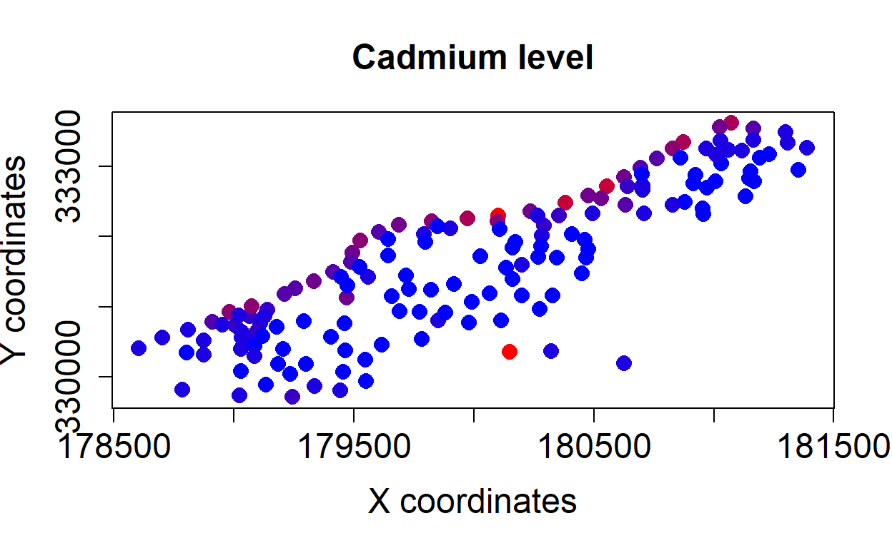

Week 11: Mixed models and autocorrelation
ANTH 674: Research Design and Analysis in Anthropology
Professor Andrew Du
Introduction
This week, we covered two different but related topics: linear mixed models and autocorrelation. Linear mixed models (LMMs) model a DV as a linear function of fixed and random factors (sometimes also called fixed and random effects, respectively). Fixed factors are categorical variables whose levels are the only ones of interest. Therefore, we estimate coefficients for the different levels because we are interested in how the intercept and/or slope of the DV against another IV changes with each level in our fixed factor. Random factors are categorical variables whose levels are a random, representative sample of some larger population of levels. Therefore, we are not interested in estimating coefficients for each level but instead want to infer something about the population of intercepts/slopes from which our levels are sampled. A utilitarian perspective can help with determining whether your factor is fixed or random: do you want to estimate coefficients for each level (along with P-values and confidence intervals) or do you want to estimate the SD of the population of intercepts/slopes from which your levels are sampled? As always, the distinction depends on your research question!

The second topic we covered was how to measure and deal with autocorrelation in your analyses. As a reminder, autocorrelation is simply non-independence in your data, where data points closer in space/time/phylogeny are more similar. Autocorrelation is somewhat related to LMMs because one can specify blocking factors as random factors to account for autocorrelation in LMMs. What we specifically covered was how to isolate the autocorrelated noise component in one’s data through detrending. We also covered how to measure autocorrelation in the data using correlograms. Lastly, we went over how to measure the association between two variables in time and space using cross-correlograms and generalized least squares.

In this tutorial, we will cover how to do all of the above in R. Where necessary, we will do some simple simulations to really make clear how some of these methods and concepts work. At the end of the tutorial, you should be able to run basic LMMs and know how to handle autocorrelation in your own research.
Goals for this tutorial
1) Continue the never-ending journey of familiarizing yourself with R.
2) Know when to specify a factor as fixed or random.
3) Learn how to run a LMM in R.
4) Learn how to do variance partitioning with LMMs.
6) Learn how to do correlograms, cross-correlograms, and generalized least squares in R.
Random factors
I briefly defined random factors in the Introduction, and I taught when to use them and how they’re used in lecture. In this tutorial, we will learn about random factors via another avenue: simulations.
Random intercept model
As I mentioned in the Introduction, one specifies a factor as random if one is interested in estimating the SD of the population of intercepts or slopes from which the levels are sampled. Let’s see how this works by first simulating data and then estimating the population SD of the intercepts across levels using LMMs.
One can think of a random factor as an extra term added to the intercept:
\[\begin{align} Y = \beta_0 + \alpha + \beta_1 X + \epsilon, \end{align}\]
where \(\alpha \sim N(0, \tau)\). That is, \(\alpha\) is a random factor that is normally distributed with mean zero and SD equal to \(\tau\). So each level within a random factor is associated with a number drawn from this normal distribution that tells us by how much that level’s intercept deviates from the main estimated intercept (\(\beta_0\), a fixed effect). This SD (\(\tau\)) is the parameter estimated in a LMM, and hopefully you can now see why levels from a random factor are associated with some population, whose SD (\(\tau\)) we want to estimate.
Below is the code to simulate the data, with comments on what each line is doing (code adapted from here). After you get somewhat of a handle of what’s going on, copy and paste the code into the console below.
intercept_SD <- 0.5 # setting SD of population of intercept deviations
e_SD <- 0.25 # setting SD of population of error terms
set.seed(1234) # to make simulations replicable
Nlevels <- 100 # number of levels within the random factor
NperLevel <- 5 # number of observations per level
N <- Nlevels * NperLevel # total number of observations
Levels <- factor(rep(1:Nlevels, each = NperLevel)) # create factor level associated with each observation
a <- rnorm(Nlevels * NperLevel, sd = intercept_SD) # simulate random draws from normal distribution of intercepts (specifically, deviations from main intercept)
e <- rnorm(N, sd = e_SD) # simulate error terms
x <- runif(N) # simulate IV
y <- 2 + .5 * x + a[Levels] + e # simulate DV, fixed intercept (2), fixed slope (0.5), add random factor, and add error terms
d <- data.frame(x, y, Levels) # combine everything into one data frame# Click "Solution" button if stucklmm.res <- lme(y ~ x, random = ~1|Levels, data = d)
summary(lmm.res)
ranef(lmm.res)
hist(ranef(lmm.res)[, 1])
mean(ranef(lmm.res)[, 1])
sd(ranef(lmm.res)[, 1])Now fit a LMM to the data. This is done using lme() from
the nlme package. The proper line of code is
lmm.res <- lme(y ~ x, random = ~1|Levels, data = d). The
random = ~1|Levels tells R that we want to estimate the SD
of intercepts (~1) across levels within the factor
Levels. Enter the code above.
Now enter summary(lmm.res) to see the full suite of
results. First you’ll see that the estimated SD for the intercept is
0.5, precisely what we set the population SD to be. The Residual SD is
0.24, close to the 0.25 we specified. The intercept and slope are 1.9
and 0.53, close to the values we picked. And lastly, you can see that
the fixed effects (intercept and slope) are significant; we can get
P-values for simple LMMs like this one but not for more complicated LMMs
(which can’t be run using lme()).
NB: A P-value can be vanishingly small but can never be zero. Zero in this case is synonymous with a very, very, very small number.
We can also get out the deviations (from the main intercept) for each
observed level sampled from the population. This is done with
ranef(lmm.res), which returns the result as a data frame
(this is also how you plot each level’s fitted lines on a scatter plot).
Enter hist(ranef(lmm.res)[, 1]) to see the distribution
sampled from the population. Because we have 100 levels, a sizable
sample size, the mean and SD of ranef(lmm.res)[, 1] should
be very close to the population mean and SD (0 and 0.5,
respectively).
Random intercept and slope model
To finish out this section, we will simulate another set of data, this time for a random intercept and slope model. This equation is now:
\[\begin{align} Y = \beta_0 + \alpha_0 + (\beta_1 + \alpha_1) X + \epsilon, \end{align}\]
where \(\alpha_0 \sim N(0, \tau_0)\) and \(\alpha_1 \sim N(0, \tau_1)\). \(\alpha_0\) and \(\tau_0\) are \(\alpha\) and \(\tau\) from above, respectively, and \(\alpha_1\) is a random factor that is normally distributed with mean zero and SD equal to \(\tau_1\). \(\alpha_1\) is the population of each level’s deviation from the fixed slope effect, \(\beta_1\).
Below is the proper code with comments. Review it and then copy and paste it into the console below.
intercept_SD <- 0.75 # setting SD of population of intercept deviations
slope_SD <- 0.25 # setting SD of population of slope deviations
e_SD <- 0.25 # setting SD of population of error terms
set.seed(1234) # to make simulations replicable
Nlevels <- 100 # number of levels within the random factor
NperLevel <- 5 # number of observations per level
N <- Nlevels * NperLevel # total number of observations
Levels <- factor(rep(1:Nlevels, each = NperLevel)) # create factor level associated with each observation
a_0 <- rnorm(Nlevels * NperLevel, sd = intercept_SD) # simulate random draws from normal distribution of intercepts (specifically, deviations from main intercept)
a_1 <- rnorm(Nlevels * NperLevel, sd = slope_SD) # simulate random draws from normal distribution of slopes (specifically, deviations from main slope)
e <- rnorm(N, sd = e_SD) # simulate error terms
x <- runif(N) # simulate IV
y <- (2 + a_0[Levels]) + (.5 + a_1[Levels]) * x + e # simulate DV, fixed intercept (2), fixed slope (0.5), add random factors, and add error terms
d <- data.frame(x, y, Levels) # combine everything into one data frame# Click "Solution" button if stucklmm.res1 <- lme(y ~ x, random = ~x | Levels, data = d)
ranef(lmm.res1)Fit the LMM with
lmm.res1 <- lme(y ~ x, random = ~x | Levels, data = d).
The random = ~x | Levels tells R that we want to estimate
the SD of deviations for the slope across the factor Levels
(the intercept is implied, just like it is when you use
lm()).
Compare the estimated parameters with those you specified (i.e., main intercept, main slope, intercept SD, slope SD, and residual SD).
As before, you can get out each level’s deviations for the intercept
and slope using ranef().
NB: I don’t go over how to do this, but you can fit
generalized linear mixed models using glmer() in
the lme4 package. There is just one extra argument,
family =, which you use to specify the error distribution
(e.g., family = "binomial" would fit a logistic regression
mixed model).
Comparing ANCOVA and LMM
Comparing the goals and results of ANCOVA to LMM will also make clearer when one would make a factor random rather than fixed.
For this section, we will use the sleepstudy dataset in
the lme4 package. Enter ?sleepstudy to get an
idea of what the dataset and variables therein are.
Let’s fit an ANCOVA with an interaction term to see see how the
intercept and slope of Reaction ~ Days change as a function
of the levels within Subject.
# Click "Solution" button if stuckancova.res <- lm(Reaction ~ Days * Subject, data = sleepstudy)
# number of estimated coefficients
length(ancova.res$coefficients)
lmm.res <- lme(Reaction ~ Days, random = ~Days | Subject, data = sleepstudy)As you can see, a total of 36 coefficients were estimated, two for each subject (intercept and slope)! This would be fine if the subjects were of interest for whatever reason, and we wanted to know what their estimated intercepts and slopes were. But, we have 180 data points only, which means we have 5 data points per estimated coefficient (we are definitely overfitting the data!).
A LMM, on the other hand, would estimate only two fixed effects (intercept and slope) and two other parameters (one SD each for the populations of intercept and slope deviations). Go ahead and fit the LMM.
Shrinkage/regularization
At this point, feel free to compare the estimated slope and intercept
for each level for an ANCOVA vs. a LMM (you can do this for a few
subjects; I present code for doing this for all subjects in “Solution”).
Remember that each level’s intercept in an ANCOVA is obtained by adding
the baseline intercept to that level’s main effect (e.g., to get the
intercept for Subject309, add the main intercept,
244.193, with the coefficient Subject309,
-39.138). To get the level’s slope, add the baseline slope
to that subject’s interaction term (e.g., to get the slope for
Subject309, add 21.765 with
-19.503). To get a level’s intercept and slope from a LMM,
you just add the deviation to its respective fixed effect
(Subject309’s intercept is the fixed intercept effect,
251.405, plus the intercept deviation,
-40.398). Recall that you extract the deviations using
ranef(lmm.res) (though I present another way of extracting
deviations in “Solution”).
# Click "Solution" button if stuck# ANCOVA
ancova.res <- lm(Reaction ~ Days * Subject, data = sleepstudy)
ancova.coef <- ancova.res$coefficients
# intercepts
c(ancova.coef["(Intercept)"], ancova.coef["(Intercept)"] + ancova.coef[grep("Days", names(ancova.coef), invert = TRUE)[-1]])
# slopes
c(ancova.coef["Days"], ancova.coef["Days"] + ancova.coef[grep("Days", names(ancova.coef))[-1]])
# LMM
lmm.res <- lme(Reaction ~ Days, random = ~Days | Subject, data = sleepstudy)
# intercepts
lmm.res$coefficients$fixed["(Intercept)"] + lmm.res$coefficients$random$Subject[, "(Intercept)"]
# slopes
lmm.res$coefficients$fixed["Days"] + lmm.res$coefficients$random$Subject[, "Days"]As you’ll see, the LMM’s intercept and slope will be closer to their
fixed counterparts (i.e., their averages) than those from ANCOVA; recall
that the LMM’s fixed effects are the same as the intercept and slope for
a linear model fit without Subject as a random factor. This
phenomenon is know as shrinkage,
regularization, or partial pooling.
Because each level’s intercept deviation, for example, is sampled from a
population with mean 0, levels’ intercepts are expected to be close to
zero on average. Therefore, each level’s deviation will be pulled
towards zero (i.e., each level’s intercept will be pulled towards the
fixed intercept effect). If a level has few observations, its deviations
will be pulled more towards zero (i.e., with little data, the best guess
we can make is the average). Because of this shrinkage property, some
researchers argue that one should always use a LMM as opposed
to an ANCOVA, but this debate is beyond my pay grade.

sleepstudy
dataset.A note on blocking
Multiple measurements were taken on each subject over time. This is
known as a repeated measures design. Because of this,
each subject’s measurements are not independent. By including
Subject as a random factor, however, we have effectively
used this variable as a blocking factor. This accounts for the
non-independent data for each subject. Fitting an ANCOVA does the same
thing, but that’s inappropriate here because we don’t have a large
enough sample size to match the large number of estimated
coefficients.
Variance partitioning
When one has multiple random factors within a LMM, one can do variance partitioning and see how much DV variation (not accounted for by the fixed effects) is attributable to each random factor. Perhaps more commonly, one can fit an intercept-only LMM and see how the DV variation is partitioned among the random factors.
Crossed random factors
Random factors are crossed if each level within a
factor is combined with each level from the other factor. We will
analyze the crossed factors (plate and sample)
from the Penicillin dataset from the package
lme4 for this section.
Enter ?Penicillin to get an idea of what the dataset and
variables are.
I entered the following code to make the summary plot from lecture
(dotplot() is from the package lattice):
dotplot(
reorder(plate, diameter) ~ diameter,
Penicillin,
groups = sample,
ylab = "Plate",
xlab = "Diameter of growth inhibition zone (mm)",
type = c("p", "a"),
auto.key = list(
columns = 3,
lines = TRUE,
title = "Penicillin sample"
),
cex = 1.5
)# Click "Solution" button if stucklmm.res <- lmer(diameter ~ 1 + (1 | plate) + (1 | sample), data = Penicillin)
lmm.var <- as.data.frame(VarCorr(lmm.res))$vcov
lmm.var / sum(lmm.var)One can see that diameter varies a decent amount across
plates (plate), but most of the variation is across
penicillin samples (sample). Let’s fit an intercept-only
LMM to quantify how much diameter variation is attributed
to each random factor (i.e., plate and
sample).
Fitting a LMM with crossed random factors is difficult to do with
lme(). This is where LMMs start to become complicated, and
we have to switch to the lmer() function in the
lme4 package. To fit a LMM with crossed random factors
using lmer(), enter
lmer(diameter ~ 1 + (1 | plate) + (1 | sample), data = Penicillin).
The (1 | plate) + (1 | sample) is telling R that we want
our intercept to vary across plate levels and
sample levels.
The main difference using lmer() is that no P-values are
returned. This is not an accident, as P-values cannot be estimated
accurately with complex LMMs (i.e., it is not clear how many degrees of
freedom there are).
We now need to get out the variances. This is done using
VarCorr(), but the output is a bit annoying to work with. I
find it’s easier to transform the output using
as.data.frame(), so enter
as.data.frame(VarCorr(lmm.res)). The column we want is
vcov. You can now interpret those variances as is, but I
find it’s more useful to transform them into proportion variance
explained by dividing each element in the column by the column’s sum. As
we can see, the majority of the diameter variance is
explained by sample, matching our intuition from the dot
plot.
Nested random factors
Nested random factors are those whose factors are nested within each other (like Russian nesting dolls). Examples include species nested within genera, hospitals nested within cities nested within states, etc.

For this section, we will use the Pastes dataset from
the lme4 package. See the help file for a description of
the dataset.
There are a total of 10 batches (batch), three casks
(cask) per batch, and researchers tested the paste strength
(strength) of two samples (sample) per
cask.
Here is a summary plot of the data (which I pulled from a paper, so no code):

As you can see from the dataset and the figure, levels from
sample are a combination of batch and
cask. This is necessary so that we know, for example, that
samples of A:a are associated with cask a from
batch A, as opposed to batch B.
A nested random factors LMM is fit using the same exact code as with
crossed factors:
lmer(strength ~ 1 + (1 | sample) + (1 | batch), data = Pastes).
This emphasizes how random factors’ variances are calculated in the same
exact way, regardless of whether the factors are crossed or nested. You
can also do nested random factors using lme():
lme(strength ~ 1, random = ~1 | batch / sample, data = Pastes).
The / indicates that sample is nested within
batch (this symbol also works for lmer(),
e.g.,
lmer(strength ~ 1 + (1 | batch / sample), data = Pastes)).
# Click "Solution" button if stucklmm.res <- lmer(strength ~ 1 + (1 | sample) + (1 | batch), data = Pastes)
# or
lmm.res <- lmer(strength ~ 1 + (1 | batch / sample), data = Pastes)
as.data.frame(VarCorr(lmm.res))$vcov
lmm.res1 <- lme(strength ~ 1, random = ~1 | batch / sample, data = Pastes)
varcomp(lmm.res1, scale = TRUE)The variance components are pulled out in the same exact way as
before when using lmer(). Variance components can be
extracted from an lme() result using varcomp
in the package ape (so many different packages in this
tutorial!). Enter varcomp(lme.res) to try it out. You can
also set argument scale = TRUE to get out proportion
variance explained. As you can see, most of the variance in
strength is among casks (sample), rather than
among batch or within sample.
Exercise 1
We’re going to use the
gpadataset, which I’ve pre-loaded for you. I want to know the SD of the intercept and slope of GPA (gpa) as a function of semester (occasion) across levels withinstudent. Fit the appropriate LMM.We’re going to analyze the
nursesdataset, which I’ve pre-loaded for you. I want to know how the variance in nurses’ stress (stress) is partitioned amongwardid, which is nested withinhospital. Get out the variance components to see if variation in stress is mostly explained by variation between hospitals, between wards, or within wards.
# Click "Solution" button when done# Q1
gpa_lmm <- lmer(gpa ~ occasion + (occasion | student), data = gpa)
# or
gpa_lmm1 <- lme(gpa ~ occasion, random = ~occasion | student, data = gpa)
# Q2
nurses_nest <- lmer(stress ~ 1 + (1 | hospital) + (1 | wardid), data = nurses)
var.comp <- as.data.frame(VarCorr(nurses_nest))$vcov
var.comp / sum(var.comp)
# or
nurses_nest1 <- lmer(stress ~ 1 + (1 | hospital / wardid), data = nurses)
# use same VarCorr code as above
# or
nurses_nest2 <- lme(stress ~ 1, random = ~ 1 | hospital / wardid, data = nurses)
varcomp(nurses_nest2, scale = TRUE)
# most variation between wardsDecomposing a time series
A time series is simply a vector of data points that are serially ordered in time.
Time series, like spatial data, are made up of three additive components: trend, autocorrelated noise, and independent noise.
We will simulate each of these components separately and then add them up to see how the three components additively combine to form a time series.
Simulations
Let’s simulate a time series with 100 data points. Independent noise
(i.e., white noise) is just uncorrelated errors sampled
from a normal distribution with mean = 0 and
sd = whichever number you’d like. Use rnorm()
to do this. We will simulate autocorrelated noise (i.e., red
noise) with arima.sim(list(ar1 = 0.8), n = 100),
where 0.8 is the strength of autocorrelation when lag = 1 (pick
whichever numbers you want). And lastly, the trend is just a linear
model with no noise with some intercept and slope values (the
independent variable is 1:n). You can plot each component
with plot(time_series_object, type = "l"). To combine the
components for the full time series, just add the three components
together!
# Click "Solution" button if stuckn <- 100
set.seed(100)
independ_noise <- rnorm(100) # can pick whichever SD you want, but mean must equal 0
autocorr_noise <- arima.sim(list(ar1 = 0.8), n = n) # pick whichever autocorrelation strength you want
trend <- 2 + 0.05 * 1:n # my intercept is 2 and slope is 0.05 (pick whichever coefficients you want)
ts_comb <- independ_noise + autocorr_noise + trend # combine the three components
plot(ts_comb, type = "l") # plot with one variable just plots the data w/in that variable in order, which is fine in this case since the order is time These three components are also found in spatial data, but the code for simulating them is much more complicated. So I won’t go over spatial data here.
Detrending a time series & correlograms
We will analyze your simulated, combined time series from the previous topic (copy and paste your code below! Or you can just use my code, which I’ve put in the console). This time series is strongly trended because we simulated it to have a trend. Let’s remove the trend (i.e., detrend the time series), so we’re left with only autocorrelated and independent noise (the sum of which should still have autocorrelation).
There are two ways to detrend a time series: (1) first differencing
and (2) fitting a trend and taking the residuals. First
differencing is done easily using diff(), though
it should be noted that this method removes both trend and also some
autocorrelation (we’ll see this below). The second method is done by
fitting a trend to the time series and taking residuals (e.g.,
lm(ts_comb ~ c(1:100))$residuals). If the trend is more
complicated (e.g., non-linear), we can fit a loess curve (using
loess.smooth()) and then take residuals.
Try out both methods of detrending on your simulated time series below.
n <- 100
set.seed(100)
independ_noise <- rnorm(100) # can pick whichever SD you want, but mean must equal 0
autocorr_noise <- arima.sim(list(ar1 = 0.8), n = n) # pick whichever autocorrelation strength you want
trend <- 2 + 0.05 * 1:n # my intercept is 2 and slope is 0.05 (pick whichever coefficients you want)
ts_comb <- independ_noise + autocorr_noise + trend # combine the three components# first differencing
first.diff <- diff(ts_comb)
# taking residuals of fitted trend
lm.resid <- lm(ts_comb ~ c(1:100))$residuals # we need the c() or else R freaks out
plot(ts_comb, type = "l")
plot(first.diff, type = "l")
plot(lm.resid, type = "l")You can compare the detrended time series to the original, using
plot(ts, type = "l").
Note that these two methods of detrending also apply to spatial data when it is strongly trended.
Autocorrelation function
The autocorrelation function (ACF) is a type of
correlogram where correlations are calculated for a time series against
itself at different time lags. Now, let’s get the ACF plot for each
detrended time series to examine the autocorrelated noise structure. To
produce the ACF plot, simply wrap acf() around the
detrended time series. If you save this to an object, you can enter the
object name to bring up the actual ACF values for each time lag.
n <- 100
set.seed(100)
independ_noise <- rnorm(100) # can pick whichever SD you want, but mean must equal 0
autocorr_noise <- arima.sim(list(ar1 = 0.8), n = n) # pick whichever autocorrelation strength you want
trend <- 2 + 0.05 * 1:n # my intercept is 2 and slope is 0.05 (pick whichever coefficients you want)
ts_comb <- independ_noise + autocorr_noise + trend # combine the three componentsacf(diff(ts_comb))
acf(lm(ts_comb ~ c(1:100))$residuals)
acf(autocorr_noise)
acf(presidents)Note that first differencing removed the positive autocorrelated noise structure (in fact it was so aggressive that there is now negative autocorrelation at lag = 1). Fitting a trend and taking residuals does not remove autocorrelation (unlike first differencing), so we still see (significant) positive autocorrelation up to lag = 2. Remember that this autocorrelated noise structure is combined with the independent noise component, so the autocorrelation is attenuated (compare this ACF to one done on just the autocorrelated noise component from your simulations).
If you want to use acf() on real data, enter
acf(presidents) to get the ACF for the time series of US
president quarterly approval ratings (what I showed in lecture).
Spatial correlogram
Really quickly, let’s create a spatial correlogram for spatial data, so you can see what the code looks like.
Below is autocorrelated noise I’ve simulated for you (same as in lecture).
All the relevant data is in the y.red data frame,
wherein the x- and y-coordinates and variable values are x,
y, and sim1, respectively. The code, then, for
creating a correlogram is:
correlogram(krig = surf.ls(np = 0, x = y.red$x, y= y.red$y, z=y.red$sim1), nint = 100).
Without going into details, this correlogram uses a trend surface (which
we’ve designated as flat with np = 0), and
nint = tells R how many distance bins to use. If you save
the code to an object, you can use the object name to bring up
correlogram values to have more control over plotting.
# Click "Solution" button if stuckcorrelogram(
krig = surf.ls(
np = 0,
x = y.red$x,
y = y.red$y,
z = y.red$sim1
),
nint = 100
)Cross-correlograms
The cross-correlation function (CCF) is a type of
cross-correlogram that quantifies how two time series are correlated
with each other at different lags. We will analyze the dataset I used in
class: climate variability vs. mammalian extinction rates from the
Plio-Pleistocene of eastern Africa. The data frame is called
d, and it contains the age (age_Ma), climate
variability measure (clim.var), and extinction rates
(ext.rates). You can plot both time series below if you’d
like.
# Click "Solution" button if stuckplot(d$age_Ma, d$clim.var, type = "l", xlim = rev(range(d$age_Ma)))
plot(d$age_Ma, d$ext.rates, type = "l", xlim = rev(range(d$age_Ma)))
ccf(d$clim.var, d$ext.rates)To create a CCF, simply enter
ccf(d$clim.var, d$ext.rates). Negative lags are where
climate variability is older, and positive lags are the opposite. As
before, you can save the ccf() results to an object to get
the actual CCF estimates.
Spatial cross-correlogram
As with the previous topic, I will quickly go over the spatial counter part of cross-correlograms, just to show you the code.
Below are maps of samples taken from the floodplain of the Meuse River in the Netherlands. Each sample has a measured organic matter and cadmium level.

To create the cross-correlogram, I’ve included the proper code in the
console below (this might take a little bit depending on how fast your
computer is). Within the correlog() function,
x and y are the coordinates, om
and cadmium are organic matter and cadmium levels, and
increment = tells R how many distance bins to use. You can
add a solid horizontal line at zero with abline(h = 0).
plot(correlog(x = meuse$x, y = meuse$y, z = meuse$om, w = meuse$cadmium, increment = 100, na.rm = TRUE))
abline(h = 0)Generalized least squares
Generalized least squares (GLS) models a DV as a linear function of one or more IVs, while relaxing the independent errors assumption of GLMs. It relaxes this assumption by explicitly modeling the non-independent error structure with one or more estimated parameters. All parameters are estimated using maximum likelihood.
We will analyze the hawaii dataset, which I’ve
pre-loaded. Specifically, we will model the square-root transformed
abundance of Moorhen.Kauai as a function of
Year and Rainfall (no interaction).
sqrt(Moorhen.Kauai) ~ Year assesses whether abundance
changes linearly through time, while
sqrt(Moorhen.Kauai) ~ Rainfall assesses whether abundance
changes as a linear function of rainfall. Feel free to plot the data
(e.g., as time series, scatter plots) to see what it looks like.
We will compare the results using lm()
vs. gls(). So go ahead and fit a multiple regression using
lm(). Then do the same using gls(). This
function requires two additional arguments:
correlation = corAR1(form = ~Year) and
na.action = na.omit. The first argument tells R to model
the autocorrelated errors using an AR1 structure
(form = ~Year tells R that Year is a time IV;
otherwise, time would correspond to the order of observations). That is,
gls() will estimate a parameter, \(\rho\), which is the correlation between
errors one time step apart. \(\rho ^
2\) is the correlation between errors two time steps apart, \(\rho ^ 3\) is the correlation between
errors three time steps apart, etc. The second argument in
gls() tells R to delete NA, something
lm() does automatically.
# Click "Solution" button if stuckplot(hawaii$Year, hawaii$Rainfall, type = "l")
plot(hawaii$Year, sqrt(hawaii$Moorhen.Kauai), type = "l")
plot(hawaii$Rainfall, sqrt(hawaii$Moorhen.Kauai))
lm.res <- lm(sqrt(Moorhen.Kauai) ~ Year + Rainfall, data = hawaii)
gls.res <- gls(sqrt(Moorhen.Kauai) ~ Year + Rainfall, data = hawaii, correlation = corAR1(form = ~Year), na.action = na.omit)
lm.res$coefficients
gls.res$coefficients
summary(lm.res)$coefficients[, "Pr(>|t|)"]
summary(gls.res)$tTable[, "p-value"]
acf(lm.res$residuals)
acf(resid(gls.res, type = "normalized"))First note the high value for estimated \(\rho\), illustrating that there’s strong
autocorrelation in the errors (Phi1 is equal to \(\rho\)).
Now compare the coefficients and P-values between GLM and GLS. As you
can see, the coefficients are fairly similar, and the significant
P-values in GLM are smaller than their counterparts in GLS. This is to
be expected: the non-independent errors will decrease P-values and
increase Type I error rate in GLM. When the non-independent errors are
accounted for, the P-values will increase to their “proper” values,
though they’re still significant in this case. The takeaway here is that
GLM coefficient estimates are unbiased, even in the face of
autocorrelated errors. So if you care only about coefficient estimates
and not P-values, just go ahead and use lm()!
Now plot the ACFs of the residuals from both models. For the
gls() results, you have to extract residuals using
resid() with argument type = "normalized".
Otherwise, the residuals will not be corrected using the estimated \(\rho\) parameter.
As you can see, the GLM residuals still show (significant) positive autocorrelation at lag = 1. This autocorrelation disappears in GLS, as to be expected (since the autocorrelation is modeled and removed).
For spatial data, errors are modeled using five models:
- Exponential (
corExp) - Gaussian (
corGaus) - Linear (
corLin) - Rational quadratic (
corRatio) - Spherical (
corSpher)

These models are entered into the correlation = argument
in gls(), just like we did with corAR1.
Accounting for autocorrelated errors using an IV
Autocorrelated errors can be accounted for by including an IV that has the same autocorrelation structure. In other words, the autocorrelation in the errors can be modeled by the IV, thereby removing autocorrelation from the residuals. For example, an herbivore species’ abundance is autocorrelated because it follows plant distribution, which itself is autocorrelated; if one models herbivore abundance as a function of plant distribution, then the autocorrelation in herbivore is explained by plant, thus producing independent errors. If model errors are independent, then this GLM assumption is satisfied, and P-values will be “normal” (no need for any correction!).
Let’s see an example of this, using the example I used in lecture. Below are spatial correlograms for an index of wetness and number of boreal tree species. As you can see, the autocorrelation structures are very similar, implying that spatial distribution of wetness affects distribution of boreal species (or both are affected by some third variable).

Now create a linear model, using lm(), where
boreal ~ Wet (the data frame is called
Boreality). Then create a spatial correlogram of the
residuals, using
correlogram(surf.ls(0, Boreality$x, Boreality$y, lm.res$residuals), nint = 300).
# Click "Solution" button if stucklm.res <- lm(boreal ~ Wet, data = Boreality)
correlogram(surf.ls(0, Boreality$x, Boreality$y, lm.res$residuals), nint = 300)As you can see, there is still some leftover positive autocorrelation
in the residuals, but the distance at which autocorrelation persists has
drastically decreased. Moreover, the new correlogram appears flatter and
“hugs” zero more, indicating less autocorrelation at all lags. Thus, the
autocorrelation in boreal has been mostly accounted for by
the similar autocorrelation structure in Wet, leaving less
autocorrelation in the lm() residuals.
Exercise 2
For this question, we will work with the
co2time series (see the help file for more details). First plot the time series withplot(co2). Then detrend the data by fitting a linear model and then taking residuals (because the time series has equally spaced data points, you can transform this into anumericclass first and then model it as a function ofc(1:length(co2))). Lastly, create an autocorrelation function plot of the detrended time series.Now we will work with two time series:
mdeathsandfdeaths(see their help file for more info about the data). First plot each time series. Then create a cross-correlation function plot.Let’s analyze the
hawaiidataset again and see if another bird species shows a more noticeable relationship withrainfall. Fit a generalized least squares model withsqrt(sqrt(Stilt.Maui))(i.e., a double square-root transformation) as a function ofYearandRainfall(no interaction). Make sure to specify that the autocorrelation structure iscorAR1()as a function ofYear. Then create a ACF plot of the residuals, making sure to use the residuals that have been GLS-corrected for autocorrelation.
# Click "Solution" button when done# Q1
plot(co2)
lm.res <- lm(as.numeric(co2) ~ c(1:length(co2)))
acf(lm.res$residuals)
# there is strong positive autocorrelation and cyclicity in the data (as can be seen in the original time series)
# Q2
plot(mdeaths)
plot(fdeaths)
ccf(mdeaths, fdeaths) # there is strong cyclicity as to be expected from the original time series. Also, the time series are in phase at lags of -1, 0, and 1, and out of phase at lags of -0.5 and 0.5
# Q3
gls.res <- gls(sqrt(sqrt(Stilt.Maui)) ~ Year + Rainfall, data = hawaii, correlation = corAR1(form = ~Year))
acf(resid(gls.res, type = "normalized"))Conclusion
We took a leap into some fairly complicated concepts and methods this week, so if you understood at least 50% of the lecture and tutorial material, you should feel very proud!
Linear mixed models are becoming more common in (biological) anthropology, though there’s a good chance they’re misused and misunderstood. Here, we covered the fundamentals of LMMs and learned what random factors are and when to use them:
- if we’re interested in estimating the SD of intercepts and/or slopes across levels
- if our sample size is too small relative to the number of estimated coefficients needed if using fixed factors
- if we want to use shrinkage/regularization to shrink estimates towards the population mean
- if we want to account for non-independence using blocking
- if we want to partition variance among the random factors.
We then learned about non-independence (i.e., autocorrelation) in a more nuanced way. Autocorrelation is often thought of as a nuisance that needs to be corrected for in statistics. I, however, prefer to think of autocorrelation as interesting structure in the data that can tell us something about the processes that generated the observed patterns. We can measure and quantify autocorrelation using correlograms (for temporal, spatial, and even phylogenetic data). We then learned how to quantify the association between two variables in time and space using cross-correlograms (cf. correlation) and generalized least squares (cf. linear models). It is important to keep in mind that autocorrelated model errors can be eliminated by including the proper IV. And even if errors are autocorrelated, coefficient estimates are unbiased and only P-values are affected (they’re biased downward).
Hopefully, this week’s lecture and tutorial have given you enough fundamentals, so you can begin to explore LMMs and autocorrelation in your own research. We have only scratched the surface, so there’s much more to learn on your own!